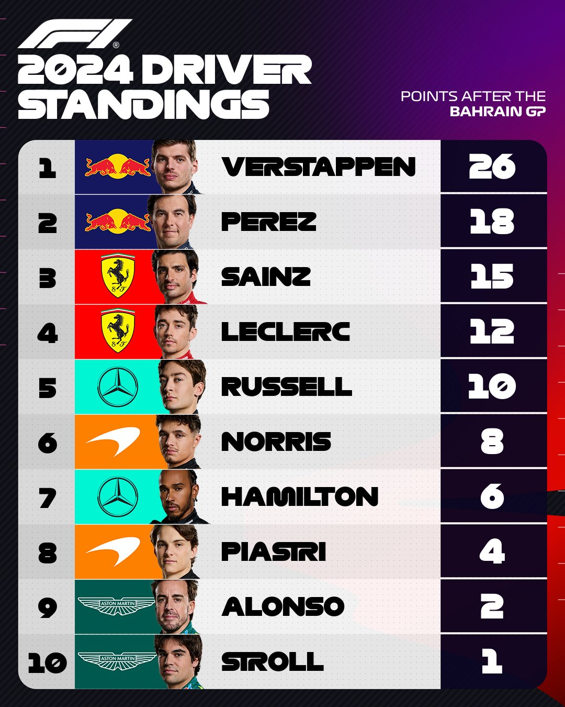
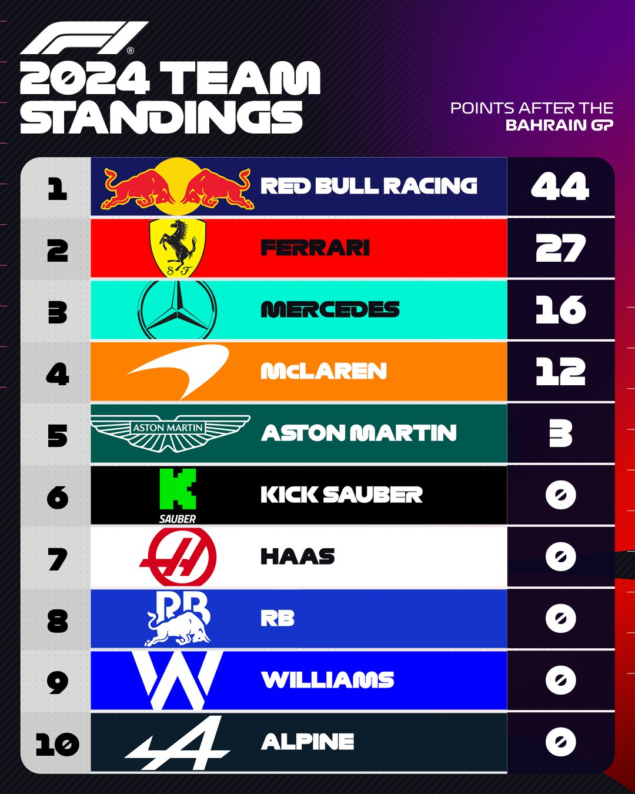
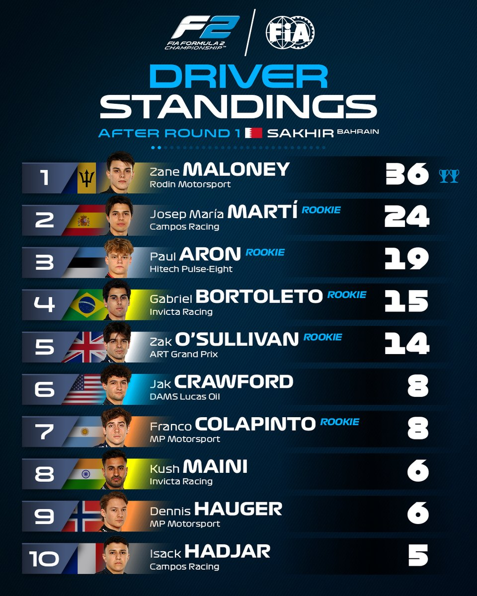
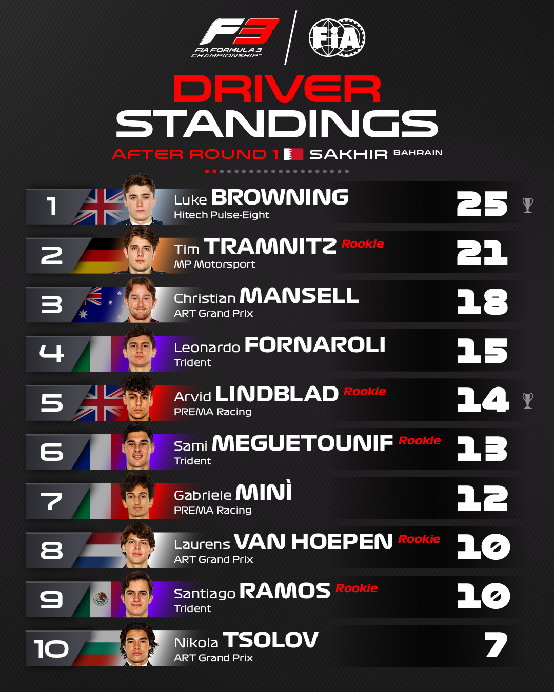
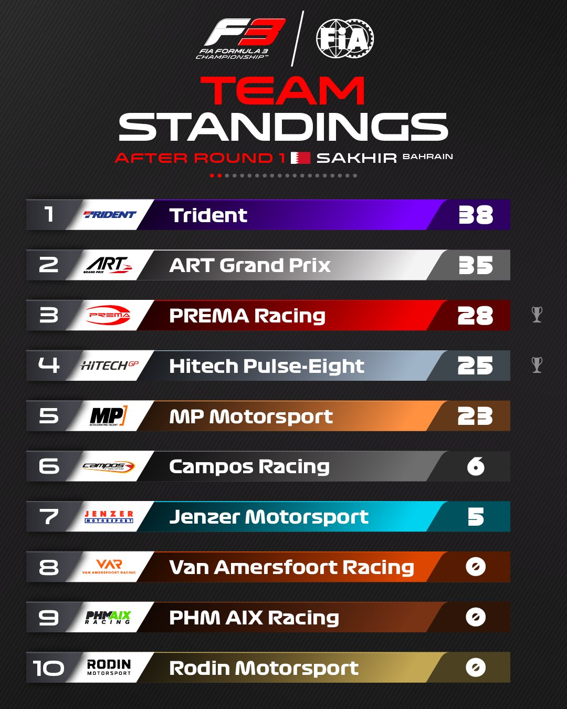

Sabores agridulces para los españoles y el titulo huele a holandes
Verstappen, Maloney y Browning ganan. Ferrari segundo sin poder plantar cara, Prema no empieza bien la temporada y Campos tiene un fin de semana casi perfecto.
Verstappen arroya y gana con facilidad, Maloney brilla con la gestión de los neumáticos y Browning aprovecha la mala salida del Prema de Beganovic y lidera toda la cerrera. Carlos sube al podio, mientras Alonso no pasa de una deccepcionante 9 posición debido a una mala configuración del coche. Pepe Martí se lleva un 2 puesto en la carrera del sábado y un 3 en la sprint del viernes, mientras su compañero acabo 4 en la sprint y el sábado fue pasajero en su monoplaza, quedando parado en la primera curva, sin poder hacer nada. Mari Boya recibe un pinchazo y acabo su carrera nada mas empezar, a pesar de la buena remontada del sábado.
    